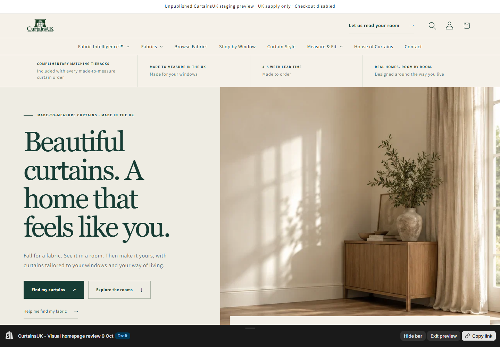
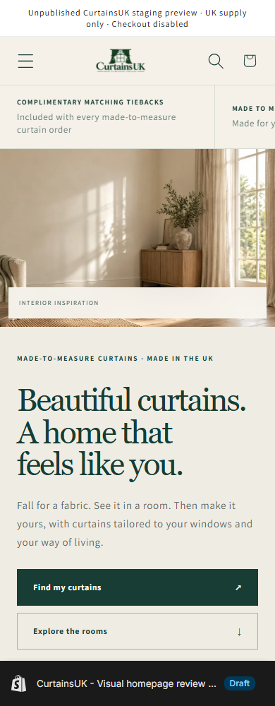
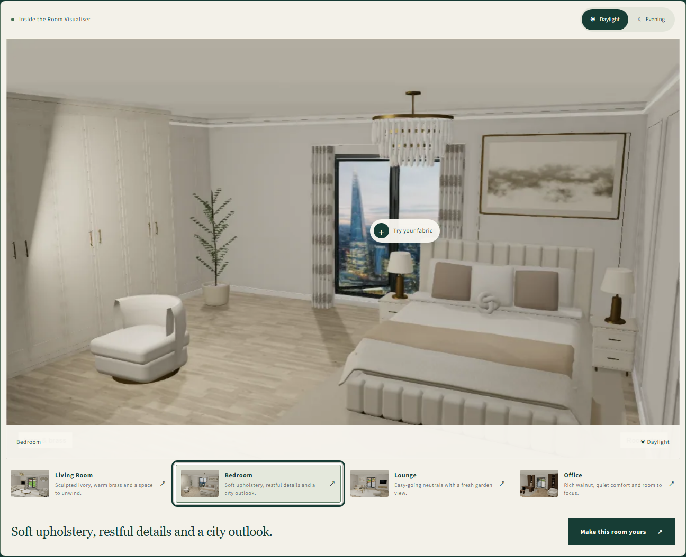
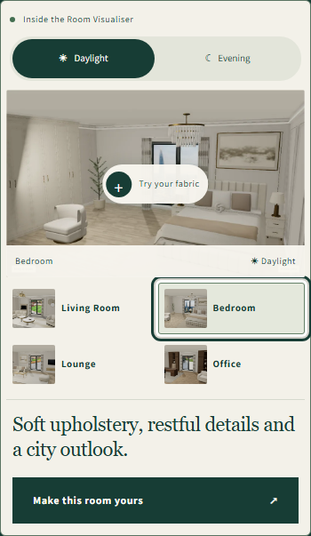
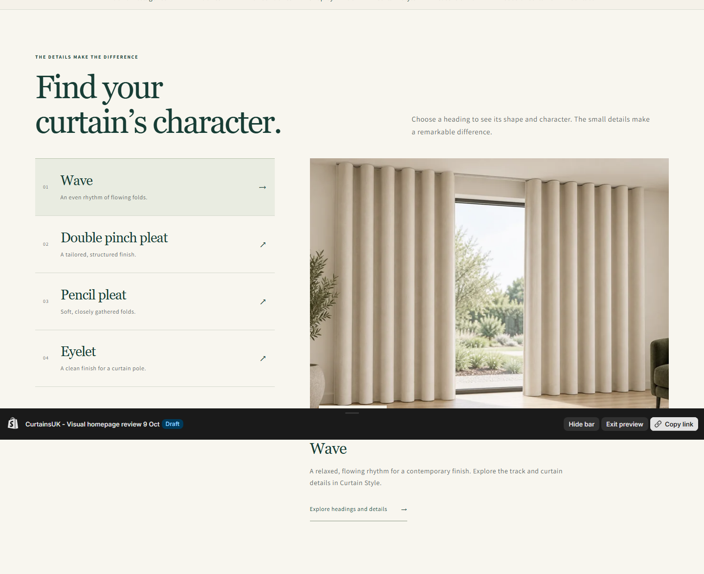
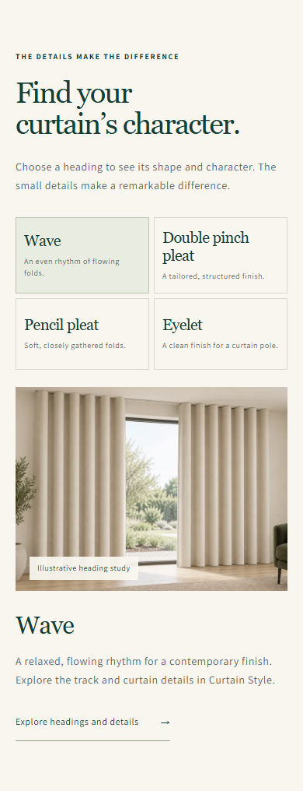

CurtainsUK · Unpublished design review
A more visual way to find your curtains.
The refined homepage brings the four-room visualiser into the shopping journey, with genuine room captures, Daylight/Evening controls, interactive heading studies and clearer paths to fabrics, samples and made-to-measure curtains.
Desktop and five responsive widths checked. Physical iPhone Safari remains pending. Nothing published; the preview carries Shopify's draft bar.
The opening

Desktop · editorial typography and interior inspiration.
390 px · image-first opening and full-width actions.Explore the four rooms

Four rooms, two lighting modes and a direct room/fabric handoff.
Touch controls and keyboard focus, genuine visualiser captures.The finishing details

Large illustrative heading study with four selectable styles.
All four styles remain visible and tappable on a phone.Earlier draft, for comparison